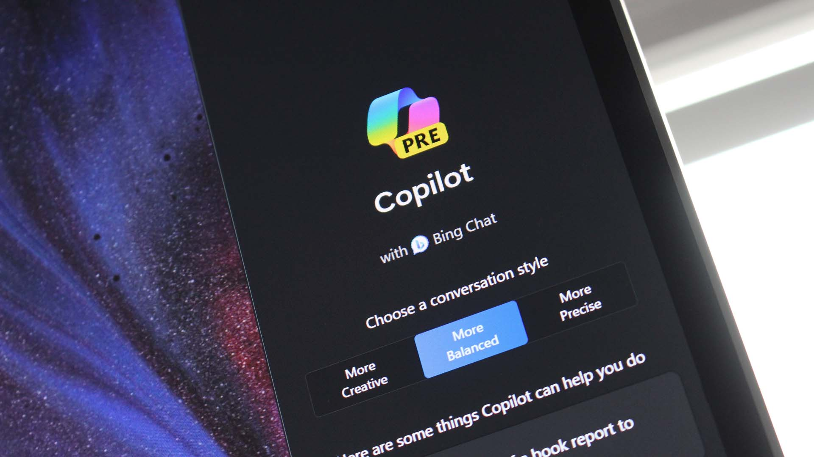
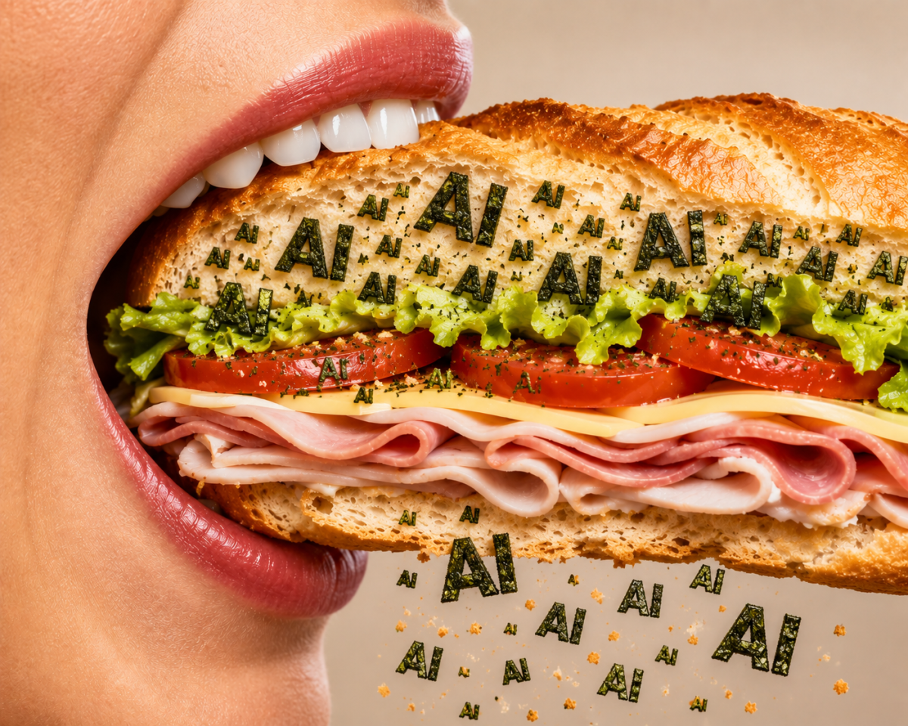
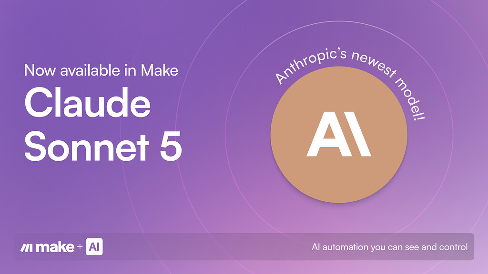
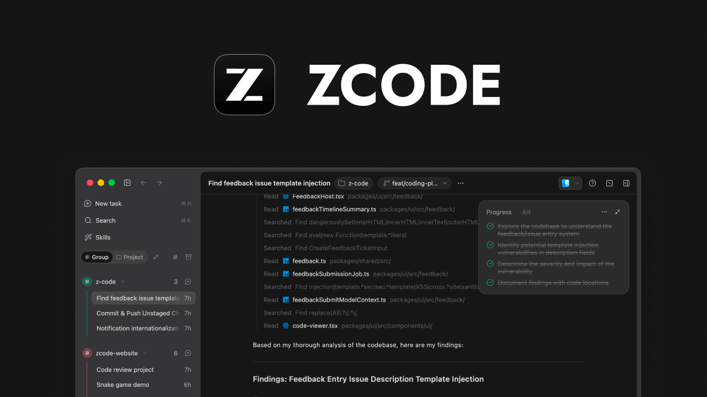
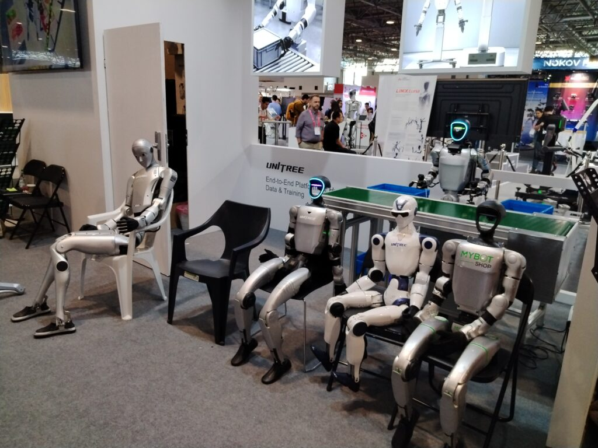
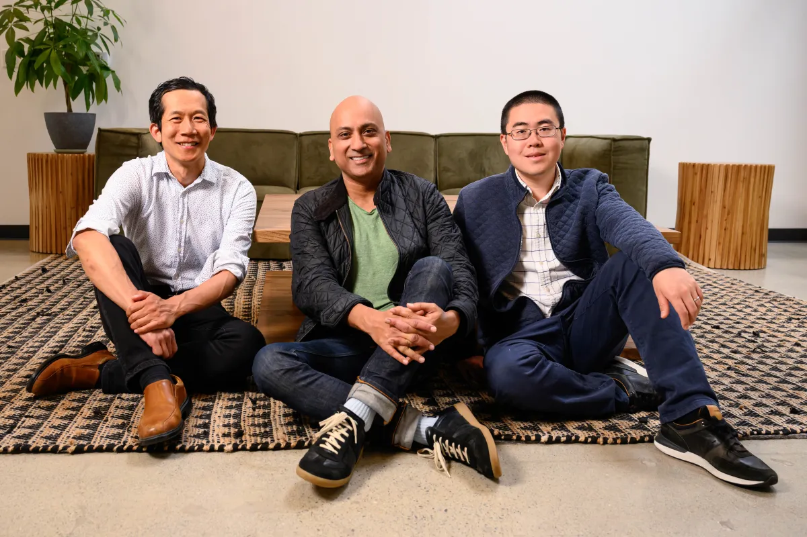
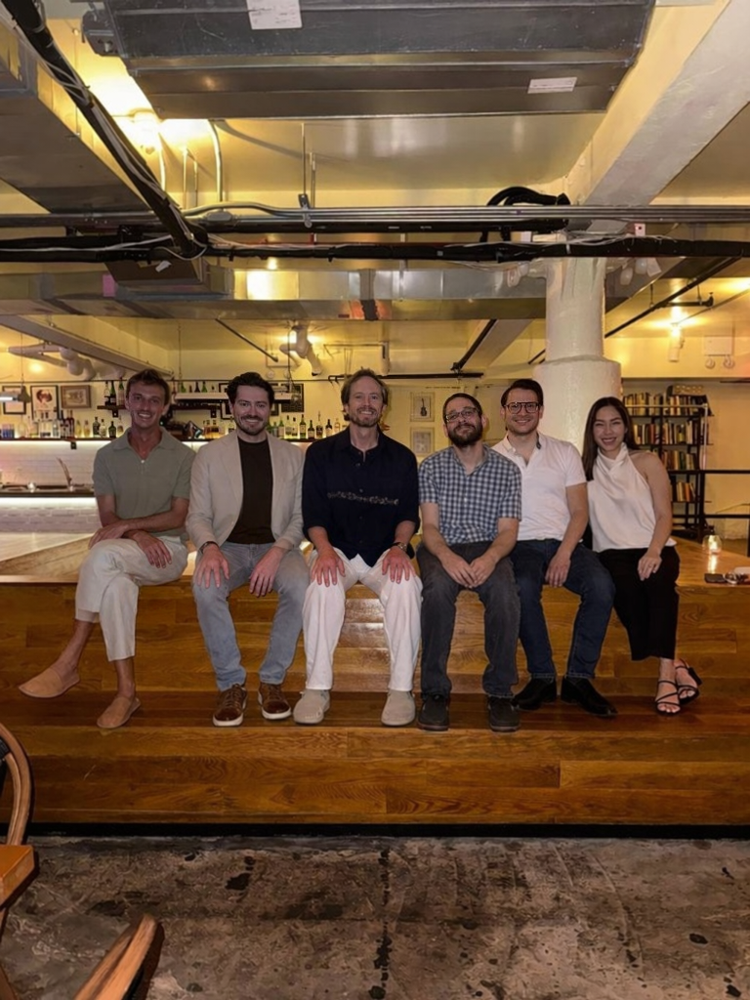
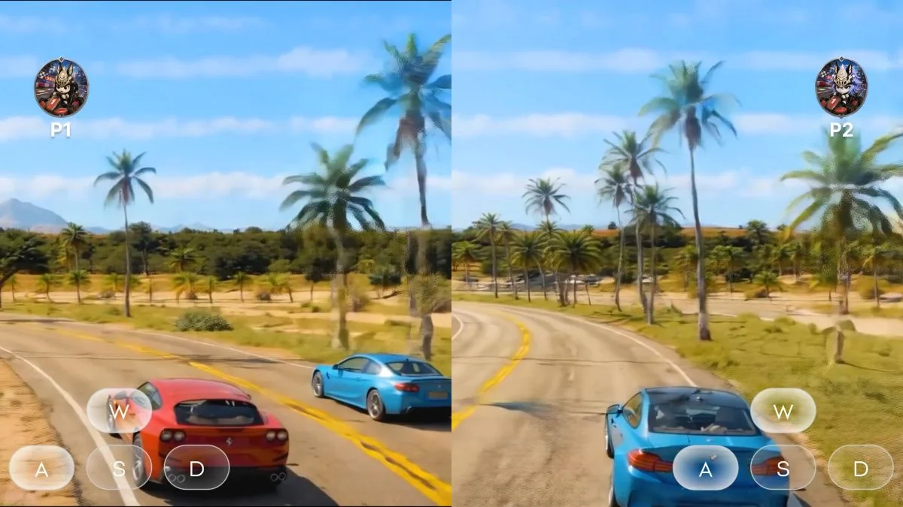

Janet 快车箱
AI Daily Briefing
2026-07-03
VOL 276
对中国创作者和中小企业来说，便宜模型和开源模型的机会还在，但入口正在变贵。你用的 IDE、云算力、聊天助手、隐私代理、企业 Agent 平台，都会慢慢变成收费闸门；真正要省钱，不是追热点换模型，而是把模型、数据、权限和账单拆开管理。
接下来 2-4 周要盯三件事：Claude 解封后安全条款会不会继续收紧，ZCode 这类国产编码工具能不能稳定承接长任务，AI neocloud 和隐私平台的估值泡沫会不会继续传导到创业者的推理成本。

SecurityWeek 援引 AP 报道，美国政府解除对 Anthropic 最新 Claude 模型的限制。Claude Fable 5 已恢复广泛可用，最强的 Mythos 5 则只面向一批获得美国政府批准的机构恢复访问。
SCMP 报道，智谱旗下 Z.ai 推出 ZCode，用 GLM-5.2 作为自主编码助手的 harness，并配合促销吸引开发者。Business Insider 称 ZCode 覆盖规划、编码、审查和部署，Lite 方案促销价为每月 16.20 美元，低于 Cursor 最低个人方案。

Techmeme 汇总 The Information 报道称，Microsoft 正在把消费者版和企业版 Copilot 聊天机器人合并为一个应用，并加入 coding tools 和名为 AutoPilot 的 AI agents。此前 Fortune 披露，该项目由 Copilot 负责人 Jacob Andreou 推进。
Reuters 报道，Meta 任命前首席营销官 Alex Schultz 为公司首位 Chief Data Officer，负责更好地管理全球 AI analytics；Denise Moreno 接任 CMO。Schultz 表示新角色会帮助 Meta 改造 AI 时代的学习和决策方式。

TechCrunch 报道，三明治连锁 Jersey Mike's 在 IPO 文件里反复提到 AI，包括用 AI 做运营、营销和客户体验。作者认为，当一家以 Danny DeVito 代言闻名的三明治品牌也开始讲 AI，市场叙事已经接近过热。
SecurityWeek 报道，Anthropic 在 Fable 5 恢复广泛访问的同时，只向经美国政府批准的美国机构恢复 Mythos 5。此前限制源于网络安全担忧，导致最新 Claude 模型经历了数周访问受限。

Make 社区公告称，Claude Sonnet 5 已在 Make native AI apps 中可用。公告称该模型在 agentic work 上接近 Opus 级质量，同时保留 Sonnet 级别的价格和速度定位。

Allen Institute for AI 发布 FlexOlmo 文章，介绍如何让不同团队训练独立专家模块，并在不汇集敏感数据的情况下合并为共享语言模型。Ai2 称该路线面向跨机构、跨国家的专长协作。

ZCode 官方文档显示，ZCode 3.0 已针对 GLM-5.2 做深度优化，强调 long-horizon tasks、多 Agent 协作、workspace state、tool results 和 Git changes 的持续整合，并提供 WeChat、Feishu、Telegram bot 触发能力。
AI Business 报道，Microsoft 提出 Frontier Company 概念，强调企业要用人类员工、AI agents 和组织设计共同扩展 AI，而不是只采购模型。文章称模型挑战之后，组织本身成为 AI 落地的下一道难题。

Google Cloud Blog 发布 SOCRadar 案例，称 SOCRadar 在 AlloyDB 与 Gemini 上运行 AI-native filtering，用于区分真实威胁和误报，并在到达安全分析师之前完成告警分类、过滤和路由。
Investing.com 报道，Cognizant 与 WRITER 建立合作，以扩展企业 AI agents。WRITER CEO May Habib 表示，企业正从试验阶段进入大规模执行阶段，需要准确、安全、适配复杂性的系统。

Let's Data Science 报道，ICRA 2026 现场最抢眼的趋势不是类人机器人，而是机器人手部灵巧度。中国创业公司 TARS 的 DexHand 拥有 21 个自由度，并以线束插入速度获得 Guinness World Record。

TechCrunch 报道，AI neocloud 公司 Together AI 完成 8 亿美元 Series C，投后估值 83 亿美元。公司向客户出租 Nvidia GPU 集群和 AI 基础设施，本轮由 Aramco Ventures 领投，NVIDIA、Salesforce Ventures 等参投。

TechCrunch 报道，隐私优先 AI 平台 Venice AI 完成 6500 万美元 Series A，估值 10 亿美元，这是其首轮外部融资。该轮由 Dragonfly 领投，Coinbase Ventures、North Island Ventures 等参投。

GamesBeat 报道，Tripo AI 完成 1.5 亿美元融资，用于游戏领域的生成式 3D 工具；一个月前该公司刚宣布 2 亿美元融资。Techmeme 同步称该公司正在开发用于游戏的 3D foundation models 和 world models。

ZCode 官网显示，ZCode 3.0 已提供 macOS、Windows 下载，定位为 GLM-5.2 官方 coding harness。它支持长任务、bot 控制、多 Agent 协作，并为 GLM Coding Plan 用户提供限时 quota 优惠和新用户 5 天试用。